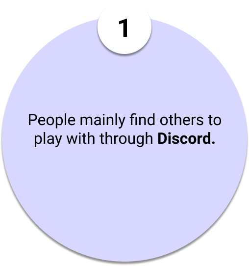
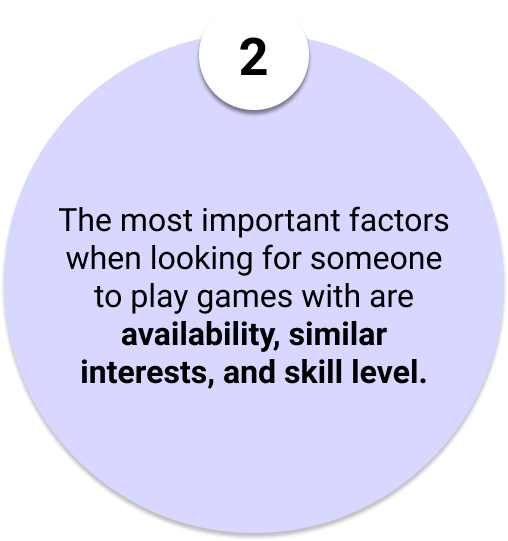
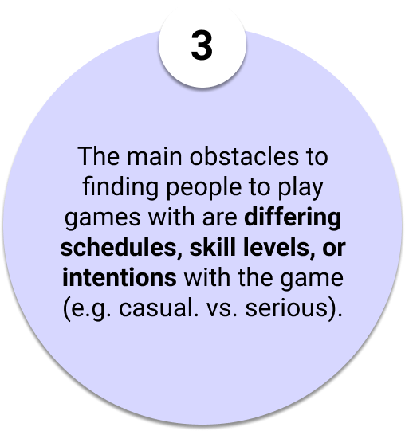
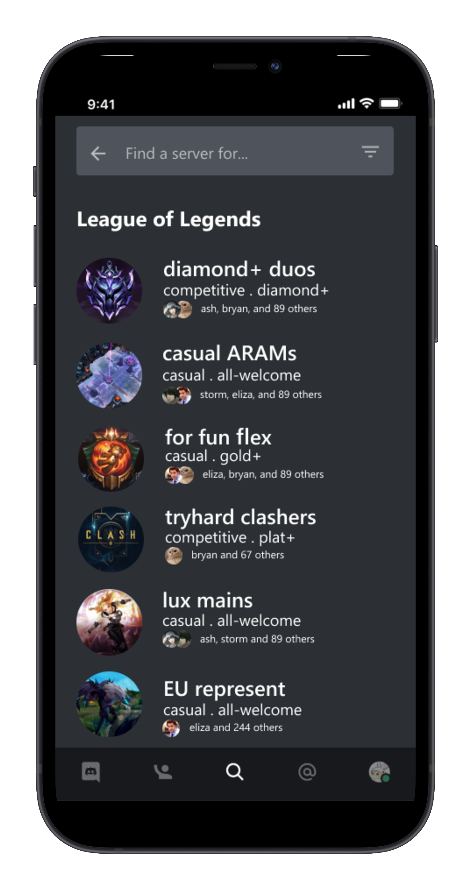
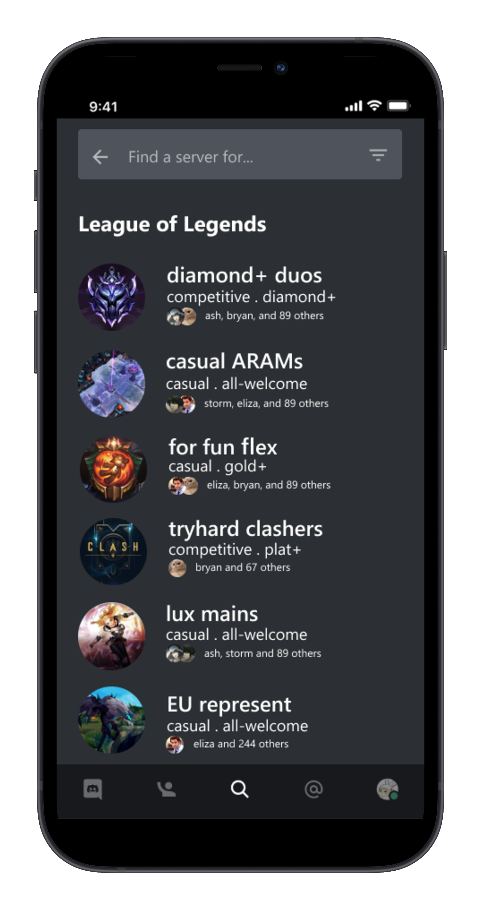

Overview
Contributions
User Research
Product Thinking
Visual Design
Team
Myself
Timeline
Dec. 2020 - Jan. 2021
(6 weeks)
Tools
Figma
Photoshop
Project Background
The Problem
With everyone staying at home due to COVID-19, it's more difficult than ever to meet new people and make friends. Since the lockdown, more and more people have been turning to games like Among Us as a means to pass time and bond with others. However, friends aren't always free to game, or don't enjoy playing the same games. Lockdown can be lonely and right now there's no easy way to meet new people with the same gaming interests.
The Goal
Create an efficient and practical way to help people connect through games.
User Research
Primary Research
I conducted surveys and interviews to better understand how people usually
look for people to play games with, what they look for, and what they find difficult about the
process.
Here are some screenshots of the surveys I sent out:
Key Insights
The main patterns I noticed among the feedback were:
  Pain Points
Among the survey and interview feedback, the top 3 concerns I discovered were:
-
Friends aren't always free at the same times
Everybody's busy with something, and can't always play at a moment's notice. People often have different sleep schedules, or have school/work deadlines. It's especially to sync up a good time for games that require more people, such as Among Us. This was the #1 complaint about finding people to play with.
-
It's difficult to play with people who are at different skill levels
Even if a few friends are free at the same time and both love the same game, they might not be able to play well together. For example, in League of Legends, a person ranked very highly at Diamond cannot play ranked with someone ranked much lower at Bronze. They could play casually, but the skill gap may make the game feel too easy or too difficult for either player.
-
People want to click with the people they're playing with
Friends might not play the same games, or may have different goals within the game (e.g. casual vs. serious). For example, some people don't play shooters because it makes them dizzy, some people only play adventure games, or some people only want to play ranked.
Competitive Analysis
I scouted out the most popular methods that people use to find people to game with, and compared their features to see where I could improve among the competition.
| Find a Discord Server | GameTree (mobile app) |
Subreddit for the Game | Current real-life friends | |
|---|---|---|---|---|
| Filter Compatibility (skill, interests) |
 |
|
||
| Schedule Availability | |
|
|
|
| Reach - how big is the network of users? | high, big user base | low, small user base | low, not many people find gamers through Reddit | low |
| Easy to network through mutual friends? | |
|
Opportunities
What can we take away from scouting out the competition?
-
Provide time scheduling to help agree on a time
Most solutions currently don't have a robust time scheduling tool - this can combat differing schedules because it will allow users to make time for events and communicate beforehand when they're free. Since this was the #1 obstacle to finding people to play games with, I'll make this a priority.
-
Create a solution that reaches a high user base
Most solutions currently have low reach/a small user base, which makes it difficult to find and connect with people meaningfully. It would be much more practical if I could find a solution that can reach and connect a wide range of people.
-
Allow users to filter people by interests or skill levels
People want to click with the people they're gaming with, but it takes time to know someone and figure out if you're a good fit - how can we filter people with differing interests beforehand?
Brainstorming Solutions
Concept A: Profile-based social media
When I was scouting the competition, I noticed that GameTree had a lot of good features to offer: in-depth profiles with interests, adding friends, messaging, and more. However, it attempts to do too much at once, making its app feel clunky and difficult to navigate. I can revamp this idea and focus on the essential features and wrap it in a easy-to-navigate UI that will help people easily connect with others.
Concept B: And Beyond
A Discord extension that allows users connect with others via public servers that they can filter by interests. Traditionally, Discord servers are private and require and invitation to join. However, this is a waste of potential for servers that are meant to be discovered. For example, Toronto Pokemon Go servers, Among Us servers, and many more are constantly looking for new people to join them.
I decided to choose the Discord extension because its high user base makes it super practical if the goal is to connect people. Discord has over 100 million regular users, and most gamers already use Discord. I want to take advantage of its large user base to build on top of what it already does well.
Key Features
I brainstormed some essential features that I thought would be most helpful in connecting a wide user base of people with similar interests.
Search for people by game
Searching by game will help narrow down the server results - most users will have a few games in mind that they want to play.
Narrow matches by interests/skill level
The #2 obstacle to finding people to play games with was differing interests or skill level within the game (e.g. casual vs. serious). After filtering for the game they want, the user can choose among various servers depending on game interest/goal, and see mutuals already in the server.
Vote for availability
The #1 obstacle to finding people to play games with was availability. With this extension, servers will have a built-in 'events' channel, in which people can vote for a time that they're free to meet up. Furthermore, the event time will be scheduled ahead of time, so people will be more likely to make time for it.
Wireframes
I sketched out the concepts for the main screens of the extension.
-
Frame 1 is the page to filter servers by game
-
Frame 2 is the page that narrows servers by interests and skill level
-
Frame 3 is a sample server with the built-in 'events' channel
-
Frame 4 demonstrates the 'vote for your availability' feature in the server
Style Guide

The Final Design
Prototypes
 

Features
1. CHOOSE A GAME
Users can first narrow their results by the game they're looking to play. The tags are helpful for filtering and describe what kind of game each one is if they're unfamiliar with it.
2. FILTER BY INTERESTS
Narrow down communities by interests (e.g. casual, competitive, rank, location, etc...). Users can also see mutual friends within each server, which gives them incentive to join.
3. SCHEDULE EVENTS WITH POLLS
Public servers have new 'event' channels to help organize availability.
In an 'event' channel, users can vote for the time they want the event to be depending on
when they're free, and also discuss the upcoming festivities.
This addresses the #1 complaint during user research - availability.
Lessons and Reflections
What I Learned
-
Get feedback often
Throughout the design process, I found myself wondering how I should design the functionality of various features. I would often refer to the initial feedback I got from survey and interviews, but after I built the prototypes, I found that some user opinions changed. My initial designs veered from solving the original problem, and if I sought feedback earlier, I could've prevented this and gotten back on track faster.
-
Stay aware of biases
Looking back, there was a bit of bias in my survey questions. For example, asking 'How easy is it for you to find people to play games with?' may imply that the process is supposed to be easy. Additionally, giving users limited answers to choose from may only give me parts of the whole story. In future iterations, I'll be careful to avoid biases when asking for user feedback.
For the future...
- Refactor UI for the 'vote for availability' dropdown
The dropdown is currently clear and does its job, but I think it could be improved to look more cohesive with the rest of the app.
- Test and iterate more
As I refactor various features of the extension, I'll definitely conduct frequent usability tests to collect feedback on what's working and what could use improvement. The design process is a cycle and I look forward to improving the product even more!